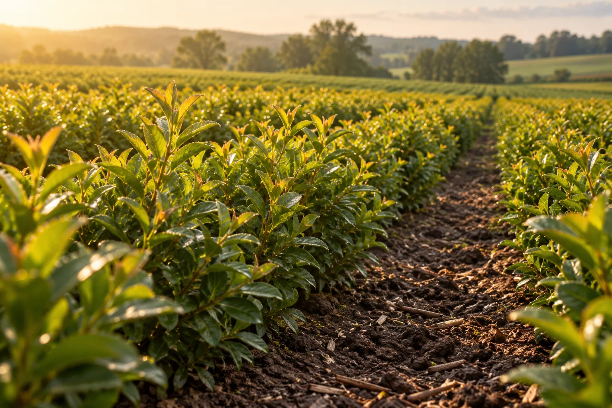

Compact inputs
Start with cartridges rather than relying entirely on transporting finished liquid.
Pilot-stage agricultural technology
Good Growth is developing a reusable reactor and starter-cartridge system for producing agricultural microbial inputs near the farms and local partners that use them.
We are exploring practical pilot opportunities to evaluate the system in real operating conditions.
In development in North Carolina. Built around conversations with growers.

Why local production
Start with cartridges rather than relying entirely on transporting finished liquid.
Explore production around when and where inputs will be used.
Produce at your farm or through a nearby agricultural partner.
Storage, handling, and application all matter. We are evaluating how local production compares on biological performance, access, timing, operator effort, and total cost—including against dry or stabilized products.
Two ways to produce locally
Interested in producing with Good Growth? Run the reactor at your farm or become a local production partner.
For growers interested in taking part in production. Pilot planning would explore the setup, operator tasks, and how production fits the application schedule.
Contact us about on-farm productionFor retailers, co-ops, and operators interested in producing near the growers they serve. This route explores access to output without every grower managing equipment.
Contact us about becoming a providerTell us where you grow. Your interest will help us identify where future local providers could be useful.